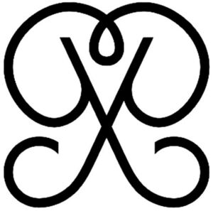

Trade Mark Journal No.2025/051 19 December 2025
WO0000001889858 (14)
Office of origin: European Union Intellectual Property Office (EUIPO)
Date of International Registration:24 July 2025
Date of designation in the UK:
24 July 2025

International priority date claimed: 6 March 2025
(European Union Intellectual Property Office (EUIPO))
(19152667)
- Class 14
- Instruments for measuring time; jewelry boxes and watch boxes; jewelry; precious stones, pearls and precious metals and their imitations; ornaments, made of or coated with metals or precious or semi-precious stones, or imitations thereof; jewelry plated with precious metals; boxes of precious metal; key rings [trinkets or fobs]; novelty key rings of precious metals; ornaments for clothing made of precious metals; frames for clocks and watches; timepieces; watch chains; watch cases; pendants for watch chains; wristwatches and wall clocks; watch straps; presentation cases for timepieces; cases of precious metal for timepieces; jewelry cases; parts and accessories for jewelry; jewelry settings; ornaments [jewelry]; jewelry ornaments; hat ornaments of precious metal; jewelry ornaments for ears; ornaments for clothing in the nature of jewelry; ornamental pins; wedding rings; amulets; rings [jewelry] made of precious metal; rings [jewelry] not made of precious metal; trophies plated with precious metals; jewelry coated with precious metal alloys; jewelry coated with precious metals; jewelry with ornamental stones; costume jewelry; bracelets and wristlets; decorative brooches [jewelry]; jewelry rope chain for necklaces; jewelry rope chain for bracelets; jewelry rope chain for anklets; chains made of precious metals; chains made of gold; clasps for jewelry; pendants; necklaces [jewelry]; crosses [jewelry]; tiaras; cuff links; badges of precious metal; precious jewels; medals; medallions; tie clips; earrings; pearls [jewelry]; jewelry made of precious stones; silver clasps [jewelry]; bracelets [jewelry]; rings [jewelry]; anklets.
SASMAT RETAIL S.L.
Representative: José Fernando Gallego Jiménez, INGENIAS,, Av. Diagonal, 514, 1-4, E-08006 Barcelona, SPAIN